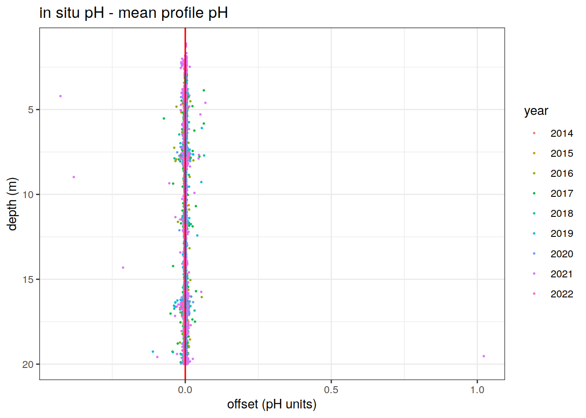
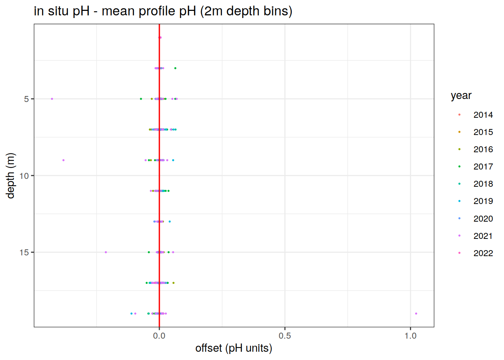
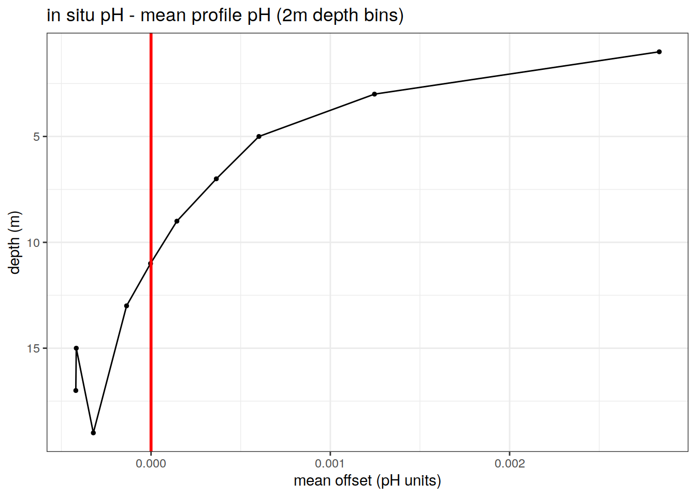

BGC-Argo pH Data
Pasqualina Vonlanthen & Jens Daniel Müller
11 May, 2022
Last updated: 2022-05-11
Checks: 7 0
Knit directory: bgc_argo_r_argodata/
This reproducible R Markdown analysis was created with workflowr (version 1.7.0). The Checks tab describes the reproducibility checks that were applied when the results were created. The Past versions tab lists the development history.
Great! Since the R Markdown file has been committed to the Git repository, you know the exact version of the code that produced these results.
Great job! The global environment was empty. Objects defined in the global environment can affect the analysis in your R Markdown file in unknown ways. For reproduciblity it’s best to always run the code in an empty environment.
The command set.seed(20211008) was run prior to running the code in the R Markdown file. Setting a seed ensures that any results that rely on randomness, e.g. subsampling or permutations, are reproducible.
Great job! Recording the operating system, R version, and package versions is critical for reproducibility.
Nice! There were no cached chunks for this analysis, so you can be confident that you successfully produced the results during this run.
Great job! Using relative paths to the files within your workflowr project makes it easier to run your code on other machines.
Great! You are using Git for version control. Tracking code development and connecting the code version to the results is critical for reproducibility.
The results in this page were generated with repository version cf4d1b6. See the Past versions tab to see a history of the changes made to the R Markdown and HTML files.
Note that you need to be careful to ensure that all relevant files for the analysis have been committed to Git prior to generating the results (you can use wflow_publish or wflow_git_commit). workflowr only checks the R Markdown file, but you know if there are other scripts or data files that it depends on. Below is the status of the Git repository when the results were generated:
Ignored files:
Ignored: .Rhistory
Ignored: .Rproj.user/
Ignored: output/
Unstaged changes:
Modified: analysis/loading_data.Rmd
Modified: code/Workflowr_project_managment.R
Note that any generated files, e.g. HTML, png, CSS, etc., are not included in this status report because it is ok for generated content to have uncommitted changes.
These are the previous versions of the repository in which changes were made to the R Markdown (analysis/ph_data.Rmd) and HTML (docs/ph_data.html) files. If you’ve configured a remote Git repository (see ?wflow_git_remote), click on the hyperlinks in the table below to view the files as they were in that past version.
| File | Version | Author | Date | Message |
|---|---|---|---|---|
| html | 6a6e874 | pasqualina-vonlanthendinenna | 2022-04-29 | Build site. |
| html | 2d44f8a | pasqualina-vonlanthendinenna | 2022-04-29 | Build site. |
| html | e61c08e | pasqualina-vonlanthendinenna | 2022-04-27 | Build site. |
| Rmd | 9664e0e | pasqualina-vonlanthendinenna | 2022-04-27 | added temp data page, changed double extremes |
| html | 10036ed | pasqualina-vonlanthendinenna | 2022-04-26 | Build site. |
| Rmd | 3e1ac14 | pasqualina-vonlanthendinenna | 2022-04-26 | separated loading data pages, added mayot biomes, switched to pH and temp flag A |
| html | c03dd24 | pasqualina-vonlanthendinenna | 2022-04-20 | Build site. |
| html | 8805f99 | pasqualina-vonlanthendinenna | 2022-04-11 | Build site. |
| html | 905d82f | pasqualina-vonlanthendinenna | 2022-02-15 | Build site. |
| html | b8a6482 | pasqualina-vonlanthendinenna | 2022-01-03 | Build site. |
| html | 7f3cfe7 | pasqualina-vonlanthendinenna | 2021-12-17 | Build site. |
| Rmd | c4cce1a | pasqualina-vonlanthendinenna | 2021-12-17 | updated cache data |
| html | 123e5db | pasqualina-vonlanthendinenna | 2021-12-07 | Build site. |
| Rmd | f8abe59 | pasqualina-vonlanthendinenna | 2021-12-07 | suppressed output messages and updated plots |
| html | 6a5024e | pasqualina-vonlanthendinenna | 2021-12-02 | Build site. |
| Rmd | 65e4748 | pasqualina-vonlanthendinenna | 2021-12-02 | updated offsets between Argo and OceanSODA |
| html | 3dc093a | pasqualina-vonlanthendinenna | 2021-11-30 | Build site. |
| Rmd | 4b89d69 | pasqualina-vonlanthendinenna | 2021-11-30 | added Argo plots to OceanSODA page |
| html | 930ea26 | pasqualina-vonlanthendinenna | 2021-11-26 | Build site. |
| html | e09c60b | pasqualina-vonlanthendinenna | 2021-11-26 | Build site. |
| html | 1305d6b | pasqualina-vonlanthendinenna | 2021-11-26 | Build site. |
| html | 5e2b8a5 | pasqualina-vonlanthendinenna | 2021-11-26 | Build site. |
| html | 3df4daf | pasqualina-vonlanthendinenna | 2021-11-26 | Build site. |
| Rmd | 9b5df99 | pasqualina-vonlanthendinenna | 2021-11-26 | added oceanSODA page |
| Rmd | f43074c | pasqualina-vonlanthendinenna | 2021-11-23 | switched reccap biomes to loading data |
| html | d3f9eb5 | pasqualina-vonlanthendinenna | 2021-11-22 | Build site. |
| Rmd | b1706c9 | pasqualina-vonlanthendinenna | 2021-11-22 | updated timeseries plots |
| html | 105630e | pasqualina-vonlanthendinenna | 2021-11-22 | Build site. |
| Rmd | 82f09d0 | pasqualina-vonlanthendinenna | 2021-11-22 | separated Southern Ocean regions |
| html | e96cc7f | pasqualina-vonlanthendinenna | 2021-11-22 | Build site. |
| Rmd | 2c5f2e5 | pasqualina-vonlanthendinenna | 2021-11-22 | corrected offset plot |
| Rmd | fb2fb74 | pasqualina-vonlanthendinenna | 2021-11-19 | corrected offset plot |
| html | 13df4f5 | pasqualina-vonlanthendinenna | 2021-11-19 | Build site. |
| Rmd | fd6ef5a | pasqualina-vonlanthendinenna | 2021-11-19 | changed offset plot |
| html | 578ae8c | pasqualina-vonlanthendinenna | 2021-11-19 | Build site. |
| Rmd | ae64132 | pasqualina-vonlanthendinenna | 2021-11-19 | added offset pH plot |
| html | ab70649 | pasqualina-vonlanthendinenna | 2021-11-19 | Build site. |
| Rmd | 171aa37 | pasqualina-vonlanthendinenna | 2021-11-19 | updated loading pH data and color palettes |
| Rmd | c696726 | pasqualina-vonlanthendinenna | 2021-11-17 | updated loading pH data and color palettes |
| html | 9824928 | pasqualina-vonlanthendinenna | 2021-11-16 | Build site. |
| Rmd | 383aa57 | pasqualina-vonlanthendinenna | 2021-11-16 | updated |
| html | b6a26a1 | pasqualina-vonlanthendinenna | 2021-11-16 | Build site. |
| Rmd | b473f72 | pasqualina-vonlanthendinenna | 2021-11-16 | added ggOceanMap for pH |
| html | 0dce554 | pasqualina-vonlanthendinenna | 2021-11-15 | Build site. |
| Rmd | 2c20367 | pasqualina-vonlanthendinenna | 2021-11-15 | added ggOceanMap for pH |
| html | 7a01367 | pasqualina-vonlanthendinenna | 2021-11-12 | Build site. |
| Rmd | 59073c1 | pasqualina-vonlanthendinenna | 2021-11-12 | added NE Pacific oxygen |
| html | 273ed2c | pasqualina-vonlanthendinenna | 2021-11-12 | Build site. |
| Rmd | 06b6be7 | pasqualina-vonlanthendinenna | 2021-11-12 | added NE Pacific oxygen |
| html | 284003d | pasqualina-vonlanthendinenna | 2021-11-11 | Build site. |
| Rmd | f7807db | pasqualina-vonlanthendinenna | 2021-11-11 | added oxygen data page |
| html | 6276d6c | pasqualina-vonlanthendinenna | 2021-11-11 | Build site. |
| Rmd | 8baed53 | pasqualina-vonlanthendinenna | 2021-11-11 | added pH data page |
Task
Explore BGC-Argo pH data through timeseries and monthly climatological maps
path_argo <- '/nfs/kryo/work/updata/bgc_argo_r_argodata'
path_emlr_utilities <- "/nfs/kryo/work/jenmueller/emlr_cant/utilities/files/"
path_basin_mask <- "/nfs/kryo/work/updata/reccap2/"
path_argo_preprocessed <- paste0(path_argo, "/preprocessed_bgc_data")Load pH data
Load in delayed-mode adjusted pH data from the data files created in Loading Data
# keep only pH data and associated CTD variables
# load in surface pH data
# ph_surface_2x2 <- read_rds(file = paste0(path_argo_preprocessed, '/ph_surface_2x2.rds'))
#
# ph_surface_1x1 <- read_rds(file = paste0(path_argo_preprocessed, "/ph_surface_1x1.rds"))
ph_surface <- read_rds(file = paste0(path_argo_preprocessed, "/bgc_merge_flag_A.rds")) %>%
filter(between(depth, 0, 20)) %>%
mutate(year = year(date),
month = month(date))
# region_masks_all_seamask_2x2 <- read_rds(file = paste0(
# path_argo_preprocessed, "/region_masks_all_seamask_2x2.rds"))
#
# region_masks_all_2x2 <- read_rds(file = paste0(path_argo_preprocessed, "/region_masks_all_2x2.rds"))
nm_biomes <- read_rds(file = paste0(path_argo_preprocessed, "/nm_biomes.rds"))Southern Ocean surface pH
The focus here is on surface pH (in the top 20 m of the watercolumn), in the region south of 30ºS
ph_surface_SO <- ph_surface %>%
filter(lat <= - 30)
# check the correct latitudes, QC flags, and depth levels have been filtered
#max(ph_surface_SO$lat)
#min(ph_surface_SO$lat)
# table(ph_surface_SO$ph_in_situ_total_adjusted_qc)
# max(ph_surface_SO$depth)
# min(ph_surface_SO$date)
# max(ph_surface_SO$date)pH offset with depth
Plot the difference between in-situ observed pH and the profile-mean surface pH for the upper 20 m. This difference represents the variability of the surface pH values with respect to the mean surface pH of the upper 20 m.
# calculate the mean pH for each surface profile
mean_profile_ph <- ph_surface_SO %>%
group_by(platform_number, cycle_number) %>%
mutate(mean_prof_ph = mean(ph_in_situ_total_adjusted, na.rm = TRUE),
.before = depth) %>%
ungroup() %>%
mutate(offset = ph_in_situ_total_adjusted-mean_prof_ph,
.after = mean_prof_ph) # subtract the mean profile pH from the measured in situ pH
mean_profile_ph %>%
ggplot()+
geom_point(aes(x = offset, y = depth, col = as.character(year)), size = 0.3, pch = 19) +
scale_y_reverse()+
geom_vline(xintercept = 0, col = 'red', size = 0.6)+
labs(x = 'offset (pH units)',
y = 'depth (m)',
col = 'year',
title = 'in situ pH - mean profile pH')
| Version | Author | Date |
|---|---|---|
| 10036ed | pasqualina-vonlanthendinenna | 2022-04-26 |
| 7f3cfe7 | pasqualina-vonlanthendinenna | 2021-12-17 |
| 105630e | pasqualina-vonlanthendinenna | 2021-11-22 |
| e96cc7f | pasqualina-vonlanthendinenna | 2021-11-22 |
| 13df4f5 | pasqualina-vonlanthendinenna | 2021-11-19 |
| 578ae8c | pasqualina-vonlanthendinenna | 2021-11-19 |
Bin the pH data into 2m-depth intervals and calculate the offset for each pH observation in each depth interval relative to the profile-mean pH
# bin the ph values into 2m bins and calculate the offset for each 2m bin
mean_profile_ph_binned <- ph_surface_SO %>%
mutate(depth = cut(depth, seq(0, 20, 2), seq(1, 19, 2)),
depth = as.numeric(as.character(depth))) %>%
group_by(platform_number, cycle_number) %>%
mutate(mean_prof_ph = mean(ph_in_situ_total_adjusted, na.rm = TRUE),
.before = depth) %>%
ungroup() %>%
mutate(offset = ph_in_situ_total_adjusted-mean_prof_ph,
.after = mean_prof_ph)
# plot the offset of the depth-binned values
mean_profile_ph_binned %>%
ggplot()+
geom_point(aes(x = offset, y = depth, col = as.character(year)), size = 0.3, pch = 19) +
scale_y_reverse()+
geom_vline(xintercept = 0, col = 'red', size = 0.6)+
labs(x = 'offset (pH units)',
y = 'depth (m)',
col = 'year',
title = 'in situ pH - mean profile pH (2m depth bins)')
Mean offset for each 2m depth bin
# bin the ph values into 2m bins and calculate the offset for each 2m bin
profile_ph_binned_ave <- ph_surface_SO %>%
mutate(depth = cut(depth, seq(0, 20, 2), seq(1, 19, 2)),
depth = as.numeric(as.character(depth))) %>%
group_by(platform_number, cycle_number) %>%
mutate(mean_prof_ph = mean(ph_in_situ_total_adjusted, na.rm = TRUE),
.before = depth) %>%
ungroup() %>%
mutate(offset = ph_in_situ_total_adjusted-mean_prof_ph,
.after = mean_prof_ph) %>%
group_by(depth) %>%
summarise(mean_offset = mean(offset))
# plot the offset of the depth-binned values
profile_ph_binned_ave %>%
ggplot()+
geom_point(aes(x = mean_offset, y = depth), size = 1, pch = 19) +
geom_line(aes(x = mean_offset, y = depth))+
scale_y_reverse()+
geom_vline(xintercept = 0, col = 'red', size = 1)+
labs(x = 'mean offset (pH units)',
y = 'depth (m)',
col = 'year',
title = 'in situ pH - mean profile pH (2m depth bins)')
Monthly climatological map
Create a climatological monthly map of surface pH, in a 2x2º longitude/latitude grid, for the region south of 30ºS (monthly pH averaged over April 2014-December 2021)
# average pH values in the top 20 m for each month in each 2 x 2º longitude/latitude grid
ph_clim_SO <- ph_surface_SO %>%
group_by(lat, lon, month) %>%
summarise(ph_clim_month = mean(ph_in_situ_total_adjusted))
# read in the map from updata
map <-
read_rds(paste(path_emlr_utilities,
"map_landmask_WOA18.rds",
sep = ""))
# map a monthly climatology of pH (April 2014 - December 2021)
map +
geom_tile(data = ph_clim_SO,
aes(lon, lat, fill = ph_clim_month)) +
lims(y = c(-85, -25)) +
scale_fill_viridis_c() +
labs(x = 'lon',
y = 'lat',
fill = 'pH',
title = 'Monthly climatological \nArgo pH (Apr 2014 - Dec 2021)') +
theme(legend.position = 'right') +
facet_wrap(~month, ncol = 2)
| Version | Author | Date |
|---|---|---|
| e61c08e | pasqualina-vonlanthendinenna | 2022-04-27 |
| 10036ed | pasqualina-vonlanthendinenna | 2022-04-26 |
| 8805f99 | pasqualina-vonlanthendinenna | 2022-04-11 |
| 7f3cfe7 | pasqualina-vonlanthendinenna | 2021-12-17 |
| 3dc093a | pasqualina-vonlanthendinenna | 2021-11-30 |
| 3df4daf | pasqualina-vonlanthendinenna | 2021-11-26 |
| 105630e | pasqualina-vonlanthendinenna | 2021-11-22 |
| e96cc7f | pasqualina-vonlanthendinenna | 2021-11-22 |
| ab70649 | pasqualina-vonlanthendinenna | 2021-11-19 |
| 7a01367 | pasqualina-vonlanthendinenna | 2021-11-12 |
| 6276d6c | pasqualina-vonlanthendinenna | 2021-11-11 |
basemap(limits = -32, data = ph_clim_SO) + # change to polar projection
geom_spatial_tile(data = ph_clim_SO,
aes(x = lon,
y = lat,
fill = ph_clim_month),
linejoin = 'mitre',
col = 'transparent',
detail = 60)+
scale_fill_viridis_c()+
theme(legend.position = 'bottom')+
labs(x = 'lon',
y = 'lat',
fill = 'pH',
title = 'monthly climatological \nArgo pH (Apr 2014 - Dec 2021)')+
facet_wrap(~month, ncol = 2)Monthly timeseries
Timeseries of monthly mean pH values, over the three different Southern Ocean regions (separated based on Mayot biomes):
# plot the region separations on a map
map +
geom_raster(data = nm_biomes,
aes(x = lon,
y = lat,
fill = biome_name)) +
labs(title = 'Southern Ocean Mayot biomes',
fill = 'biome')
# plot a timeseries of monthly values over the whole southern ocean south of 30ºS
ph_surface_SO <- inner_join(ph_surface_SO, nm_biomes)
ph_month_SO <- ph_surface_SO %>%
group_by(year, month, biome_name) %>%
summarise(ph_ave = mean(ph_in_situ_total_adjusted))
# timeseries of monthly pH values over 2014-2021 (separate panels for each month)
ph_month_SO %>%
ggplot(aes(x = year,
y = ph_ave,
group = biome_name,
col = biome_name)) +
facet_wrap(~month) +
geom_line() +
geom_point() +
labs(x = 'year',
y = 'pH in situ (total scale)',
title = 'monthly mean Argo pH (Apr 2014-Dec 2021, Southern Ocean)',
col = 'region')
| Version | Author | Date |
|---|---|---|
| e61c08e | pasqualina-vonlanthendinenna | 2022-04-27 |
| 10036ed | pasqualina-vonlanthendinenna | 2022-04-26 |
| 7f3cfe7 | pasqualina-vonlanthendinenna | 2021-12-17 |
| 3df4daf | pasqualina-vonlanthendinenna | 2021-11-26 |
| 105630e | pasqualina-vonlanthendinenna | 2021-11-22 |
| 7a01367 | pasqualina-vonlanthendinenna | 2021-11-12 |
| 284003d | pasqualina-vonlanthendinenna | 2021-11-11 |
#all months on one plot in different colors (not very nice plot)
# ph_month_SO %>%
# ggplot(aes(x = year, y = ph_ave, group = month, col = as.character(month))) +
# geom_line() +
# geom_point() +
# labs(x = 'year', y = 'pH in situ (total scale)', title = 'monthly mean pH (Apr 2014-Aug 2021)')Plot the monthly average pH, per year (from Jan 2015 - Dec 2020), for each Southern Ocean RECCAP region (1, 2, 3)
# timeseries of monthly pH values for each year (separate years on the same plot)
ph_month_SO %>%
# filter(year != 2014) %>% # remove the year that is missing data
ggplot(aes(x = month,
y = ph_ave,
group = year,
col = as.character(year)))+
geom_line()+
geom_point()+
scale_x_continuous(breaks = seq(1, 12, 2))+
facet_wrap(~biome_name)+
labs(x = 'month',
y = 'pH in situ (total scale)',
title = 'monthly mean Argo pH (Jan 2015-Dec 2021, Southern Ocean regions)',
col = 'year')
| Version | Author | Date |
|---|---|---|
| e61c08e | pasqualina-vonlanthendinenna | 2022-04-27 |
| 10036ed | pasqualina-vonlanthendinenna | 2022-04-26 |
| 7f3cfe7 | pasqualina-vonlanthendinenna | 2021-12-17 |
| 3df4daf | pasqualina-vonlanthendinenna | 2021-11-26 |
| 105630e | pasqualina-vonlanthendinenna | 2021-11-22 |
| 7a01367 | pasqualina-vonlanthendinenna | 2021-11-12 |
| 6276d6c | pasqualina-vonlanthendinenna | 2021-11-11 |
# calculate a yearly average ph (one ph value per year, for the whole domain)
ph_year_SO <- ph_surface_SO %>%
group_by(year, biome_name) %>%
summarise(ph_ave = mean(ph_in_situ_total_adjusted))
# plot a timeseries of the yearly average pH value (one value per year)
ph_year_SO %>%
ggplot(aes(x = year, y = ph_ave, group = biome_name, col = biome_name))+
geom_line()+
geom_point()+
labs(x = 'year',
y = 'pH in situ (total scale)',
title = 'yearly mean Argo pH (Apr 2014-Aug 2021, south of 30ºS)',
col = 'region')Northeast Pacific surface pH
Focus on surface pH in the northeast Pacific Ocean (10ºN - 70ºN, -190ºE - -140ºE)
# select only pH databetween 10 and 70ºN, and 190 and 140ºW, for the top 20 m of the watercolumn
ph_nepacific <- ph_surface %>%
filter(between(lat, 10, 70),
between(lon, 190, 240))
# longitudes larger than -180ºE are lon-380Monthly climatological map
Create a map of climatological monthly surface pH values, in the north-west Pacific ocean (10ºN - 70ºN, -190ºE, -140ºE), for
# average pH values in the top 20 m for each month in each 2 x 2º longitude/latitude grid
ph_mean_nepacific <- ph_nepacific %>%
group_by(lat, lon, month) %>%
summarise(ph_ave_month = mean(ph_in_situ_total_adjusted))
# map a monthly climatology of surface pH (Jan 2013 - August 2021)
map +
geom_tile(data = ph_mean_nepacific,
aes(lon, lat, fill = ph_ave_month)) +
lims(y = c(5, 60),
x = c(180, 250)) +
scale_fill_viridis_c() +
labs(x = 'lon',
y = 'lat',
fill = 'pH',
title = 'Monthly average pH (Jan 2013-Aug 2021)') +
theme(legend.position = 'right')+
facet_wrap(~month)# using the ggOceanMaps package
basemap(limits = c(-180, -110, 7, 60), data = ph_mean_nepacific) +
geom_spatial_tile(data = ph_mean_nepacific,
aes(x = lon,
y = lat,
fill = ph_ave_month))+
scale_fill_viridis_c()+
facet_wrap(~month) +
labs(x = 'lon',
y = 'lat',
fill = 'pH',
title = 'Monthly average pH (Jan 2013-Aug 2021)')
# haven't figured out why the data isn't being plotted Monthly timeseries
Timeseries of monthly mean pH, averaged over the whole NE-Pacific region (10ºN - 70ºN, -190ºE - -140ºE), in the upper 20 m of the watercolumn.
# plot a timeseries of monthly values over the whole southern ocean south of 30ºS
ph_month_nepacific <- ph_nepacific %>%
group_by(year, month) %>%
summarise(ph_ave = mean(ph_in_situ_total_adjusted))
# timeseries of monthly pH values over 2014-2021 (separate panels for each month)
ph_month_nepacific %>%
ggplot(aes(x = year, y = ph_ave)) +
facet_wrap(~month) +
scale_x_continuous(breaks = seq(2013, 2021, 2)) +
geom_line() +
geom_point() +
labs(x = 'year',
y = 'pH in situ (total scale)',
title = 'monthly mean pH (Jan 2013-Aug 2021, NE Pacific)')Monthly average pH, per year, over the NE Pacific region
# timeseries of monthly pH values for each year (separate years on the same plot)
ph_month_nepacific %>%
ggplot(aes(x = month, y = ph_ave, group = year, col = as.character(year)))+
geom_line()+
geom_point()+
scale_x_continuous(breaks = seq(1, 12, 1))+
labs(x = 'month',
y = 'pH in situ (total scale)',
title = 'monthly mean pH (Jan 2013-Dec 2020, NE Pacific)',
col = 'year')
sessionInfo()R version 4.1.2 (2021-11-01)
Platform: x86_64-pc-linux-gnu (64-bit)
Running under: openSUSE Leap 15.3
Matrix products: default
BLAS: /usr/local/R-4.1.2/lib64/R/lib/libRblas.so
LAPACK: /usr/local/R-4.1.2/lib64/R/lib/libRlapack.so
locale:
[1] LC_CTYPE=en_US.UTF-8 LC_NUMERIC=C
[3] LC_TIME=en_US.UTF-8 LC_COLLATE=en_US.UTF-8
[5] LC_MONETARY=en_US.UTF-8 LC_MESSAGES=en_US.UTF-8
[7] LC_PAPER=en_US.UTF-8 LC_NAME=C
[9] LC_ADDRESS=C LC_TELEPHONE=C
[11] LC_MEASUREMENT=en_US.UTF-8 LC_IDENTIFICATION=C
attached base packages:
[1] stats graphics grDevices utils datasets methods base
other attached packages:
[1] ggOceanMaps_1.2.6 ggspatial_1.1.5 oce_1.5-0 gsw_1.0-6
[5] lubridate_1.8.0 forcats_0.5.1 stringr_1.4.0 dplyr_1.0.7
[9] purrr_0.3.4 readr_2.1.1 tidyr_1.1.4 tibble_3.1.6
[13] ggplot2_3.3.5 tidyverse_1.3.1 workflowr_1.7.0
loaded via a namespace (and not attached):
[1] fs_1.5.2 sf_1.0-5 httr_1.4.2 rprojroot_2.0.2
[5] tools_4.1.2 backports_1.4.1 bslib_0.3.1 rgdal_1.5-28
[9] utf8_1.2.2 R6_2.5.1 KernSmooth_2.23-20 rgeos_0.5-9
[13] DBI_1.1.2 colorspace_2.0-2 raster_3.5-11 withr_2.4.3
[17] sp_1.4-6 tidyselect_1.1.1 processx_3.5.2 compiler_4.1.2
[21] git2r_0.29.0 cli_3.1.1 rvest_1.0.2 xml2_1.3.3
[25] labeling_0.4.2 sass_0.4.0 scales_1.1.1 classInt_0.4-3
[29] callr_3.7.0 proxy_0.4-26 digest_0.6.29 rmarkdown_2.11
[33] pkgconfig_2.0.3 htmltools_0.5.2 highr_0.9 dbplyr_2.1.1
[37] fastmap_1.1.0 rlang_1.0.2 readxl_1.3.1 rstudioapi_0.13
[41] farver_2.1.0 jquerylib_0.1.4 generics_0.1.1 jsonlite_1.7.3
[45] magrittr_2.0.1 Rcpp_1.0.8 munsell_0.5.0 fansi_1.0.2
[49] lifecycle_1.0.1 terra_1.5-12 stringi_1.7.6 whisker_0.4
[53] yaml_2.2.1 grid_4.1.2 parallel_4.1.2 promises_1.2.0.1
[57] crayon_1.4.2 lattice_0.20-45 haven_2.4.3 hms_1.1.1
[61] knitr_1.37 ps_1.6.0 pillar_1.6.4 codetools_0.2-18
[65] reprex_2.0.1 glue_1.6.0 evaluate_0.14 getPass_0.2-2
[69] modelr_0.1.8 vctrs_0.3.8 tzdb_0.2.0 httpuv_1.6.5
[73] cellranger_1.1.0 gtable_0.3.0 assertthat_0.2.1 xfun_0.29
[77] broom_0.7.11 e1071_1.7-9 later_1.3.0 viridisLite_0.4.0
[81] class_7.3-20 units_0.7-2 ellipsis_0.3.2